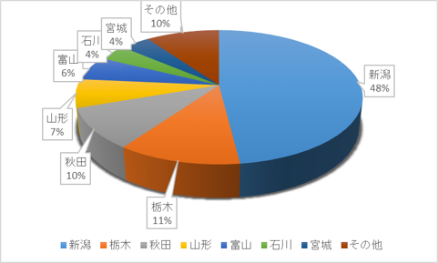

LEPTとは?
LEPTとは新潟大学の公認フットサル・サッカーサークルであり、LEPTという名前はLEt's Play Togetherの頭文字をとったものになっています。現在サークルは総勢120名ほどになっています。みんなで楽しくサッカーやフットサルをしよう！とのコンセプトのもとで週に3回ほど練習しています。長期休みや夏には様々なイベント(BBQなど)や遠征を実施しています。
少しでもLEPTに興味をもったあなた！参加お待ちしております。
LEPTの出身割合グラフ



LEPTとは新潟大学の公認フットサル・サッカーサークルであり、LEPTという名前はLEt's Play Togetherの頭文字をとったものになっています。現在サークルは総勢120名ほどになっています。みんなで楽しくサッカーやフットサルをしよう！とのコンセプトのもとで週に3回ほど練習しています。長期休みや夏には様々なイベント(BBQなど)や遠征を実施しています。
少しでもLEPTに興味をもったあなた！参加お待ちしております。